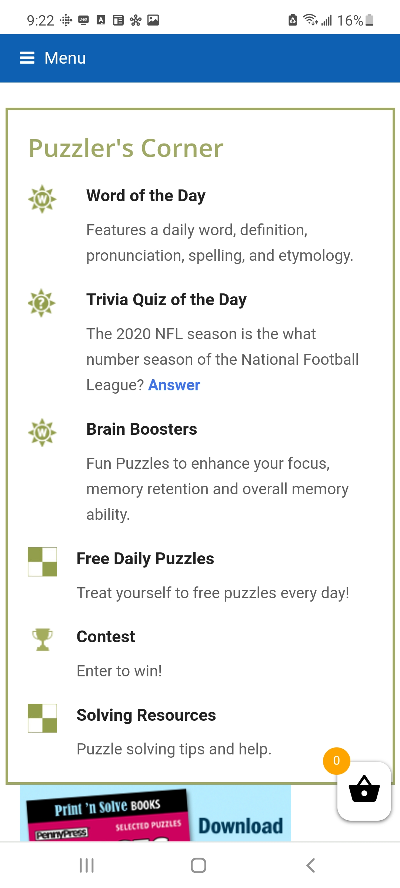

PARC: Proximity
IMDB
IMDB WebsiteHere we can see Proximity at work - by arranging the Watch Options next to Trailer, and by arranging them right underneath the tv/movie posters, we can easily discern which movie we're looking at the trailer for!
White Space and Clean Design
John Deere
John Deere WebsiteWith this screenshot, we can see their top items clearly laid out - the whitespace in between helps each type of lawn vehicles stand out clearly from the others, helping the user find the exact item they're looking for without visual confusion.
PARC: Alignment
PennyDell Puzzles
PennyDell Website
Midway through their homepage is this section that illustrates some non-store features of their website, and I think this illustrates Alignment pretty well! Each item has the text aligned with its heading, and not the pure left side of the screen. Makes the reading easier and logical when reading from top to bottom.